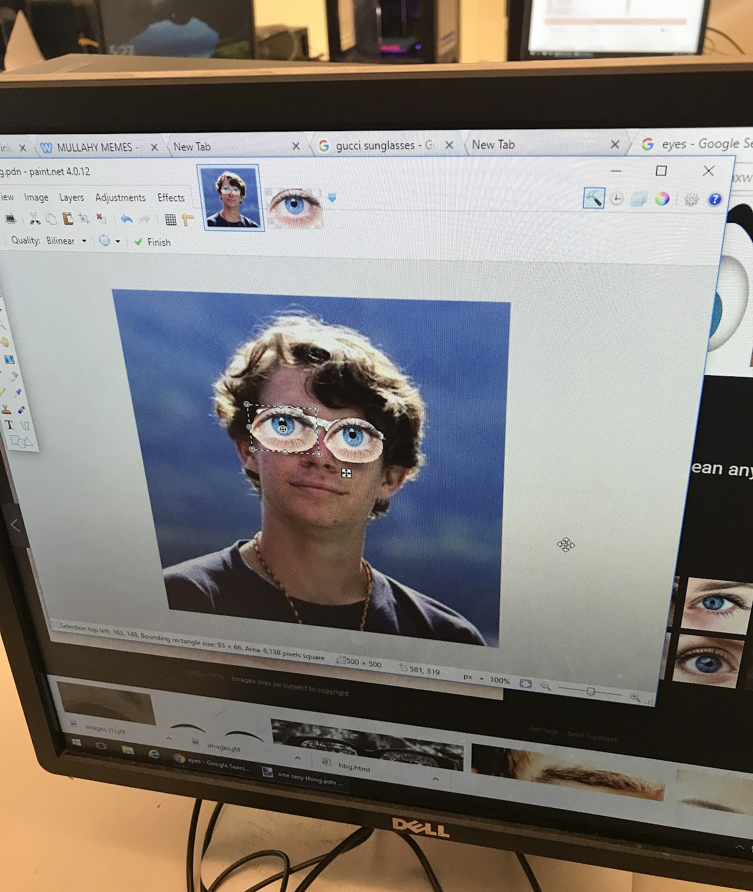

Comunidad
Upon returning to the DC area, I joined Comunidad, a community engagement non-profit. I joined the staff as a Special Projects Coordinator to help further develop a program working with a few students who were learning morse code to help build their confidence in regular reading. I developed a morse-code keyboard to help our team create an original morse-code curriculum for this program. A highlight was establishing a high school Coding Bootcamp, which I have now been leading two years in a row. Two dozen students come for a weeklong coding bootcamp crash course, working with volunteers, to learn how to build a website or make a game in Python. As a result of this program, multiple students are now going to college to study Computer Science and have the potential to create generational change for them and their families.
Code Club
My two budding passions came together in an opportunity to be a part of SU's Center for Community Engagement Student Lead program. Their Youth Initiative was to help support the local community by augmenting educational experiences for the local K-12 schools, some of the most underserved in Seattle. I had the privilege of developing and leading a Python Code Club for Washington Middle Schoolers after school once a week. I got to introduce Python to a dozen students and teach them how to create their own programs and games. The relationship building experiences through the WMS Code Club kept my educational career pursuits alive even as I graduated and moved into the startup tech world.
A picture of me that a student photoshopped!
iD Tech
Instructing and counseling at iD Tech was the first place I really learned how to self-manage. Building out my own lesson plans, managing my campers personal projects, and making sure it was all running on time was kind of like running my own mini-startup!

Young Life
Being apart of a community helps to give our life purpose. Being a part of Young Life and sharing faith with my peers was a privilege and something that honestly saved my college experience. Here I learned how valuable showing up even when you don't want to can be.